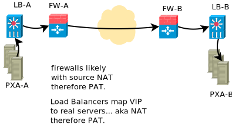

Why SFTP is More Often Chosen than FTPS
There has been some discussion around where to place an S in order to secure file transfers. Among a variety of competing technologies, there are two that may appear fairly equivalent: SFTP and FTPS. Both of these technologies are candidates to replace the venerable FTP method of transferring files.
It is pertinent to review the reasons why SFTP was chosen in place of FTPS. In this discussion please keep in mind:
I am not a security expert, this just reflects my current understanding
We have not deployed FTPS, therefore we have little experience with it.
If there are some misapprehensions, then we would be pleased to learn about them.
FTP
In the early days of the internet, before even the advent of the world-wide web, one of the earliest applications was file transfer, as first defined by the Internet Engineering Task Force standard Request for Comments (original IETF RFC 114, dating from 1971 ). It evolved over the following decades with the same basic ideas. On the internet, every device has an internet address, and for every address there is on the order of 65,000 ports available (kind of sub-addresses).
If Alice wants to communicate with Bob, she initiates a connection to Bob’s device on port 21. Bob indicates he is ready to receive the file, and then they agree on a second connection that is established over which the file data actually flows. How the second connection is established has varied a lot over time. The information to set up the data path naturally passes over the control path previously set up.
In those early days, Alice and Bob would have two servers directly on the internet. The internet was a collegial place, and firewalls did not exist. Fast-forward thirty years, and the reality is quite different.
Product Exchangers: Supporting Large Numbers of Transfers
In modern times, if one is transferring hundreds of thousands or millions of files, there will likely be a large number of network devices between Alice and Bob’s servers. The following diagram is a typical simple case one is likely to meet in reality:
To send large numbers of files and withstand failures of individual servers, there will typically be an array of servers to send files. Let’s call them a product exchange array. The purpose of such arrays of servers is to process and/or transfer more data than could be transferred in a given time by a single server, and to provide transparent redundancy for component failures.
To make it look to outsiders as a single server, there will be a load balancer in front of the real servers. When initiating connections or receiving inbound ones, the load balancer will map the real servers’ actual addresses to a public facing one. The load balancer maintains a table of who is connected to whom, so that when a packet is received from an external server, it can map it back to the correct real server. This is called Network Address Translation, or NAT.
Recall that there are 65,000 ports available, so several servers could choose, from their real addresses, to use the same source port to initiate their connection. When the load balancer maps the connection to an publically visible address, you could have more than one server claiming the same source port. So the load balancer has to map ports as well as just addresses. This is called Port Address Translation, or PAT.
So there is a table stored in some fashion (on higher end devices in content addressable memory, or CAM)
10.2.3.4:67 |
134.67.7.8:45 |
Which maintains the mapping of a private address & port to a public address & port for every connection traversing a given device.
When we get to a firewall, especially when organizations use private addressing, the process is repeated. So the address and port might get re-mapped to different ones again.
The same operations happen at the other end, with the firewall and the load balancer maintaining tables of who is connected to what, and mapping addresses and port numbers in order to allow the servers at each end to communicate.
With a straight-forward protocol, like Secure Shell, or Hypertext Transfer Protocol, there is only a single channel and only a single table entry in each of these devices is necessary per connection. The algorithmic complexity of such operations is a small constant amount, small in terms of memory and cpu.
Recall that the control path indicates the method by which the data connection is established. In order to have the FTP data channel connect the two servers, each firewall or load balancer between the two servers ideally observes the control path, looks for the data port specification, and proactively creates a mapping for it, creating a second pair of relationships to manage in the table for every connection. This activity is termed FTP proxying. A proxy should be run at any point where network or port translation occurs, with at least double the (still small) memory overhead of other protocols, but the cpu work is about the same (just using two entries in mapping tables instead of one). Optimally, some sort of proxy or watcher on firewalls is able to adjust firewall rules dynamically to permit only specific data connections in use through when they need to, minimizing exposure to the internet to only double that of other protocols.
In practice, there may be many NAT/PAT firewalls between A and B, and neither Alice nor Bob will be in charge of the configuration of all of the intervening devices. Because the FTP control path is easily inspected, there is just a bit of proxy code commonly implemented on network devices to cover this special case.
FTPS
FTPS - is FTP with Transport Level Security added to it. The control path is now encrypted, and thus not available to proxies on each of the firewalls and load balancers (such as LVS (linux virtual server), or standard products from F5, barracuda or a number of others). The straightforward answer to that problem is to terminate the encryption on each firewall and load balancer, so that the control traffic can be viewed to obtain the needed port numbers, and then re-encrypted. Essentially one would need to decrypt and re-encrypt the control information at least four times in between the source and destination servers.
Ideally one would decrypt only the control path, the router would intercept connection requests and return a local encryption response. But if the data path is not also intercepted, then the server will have one encryption key for the control path and another for the data path, which will break TLS. So most likely, each intervening router and firewall is obligated to decrypt and re-encrypt all the data going through as well.
Essentially, this means that Alice and Bob accept that every NAT/PAT device between them is allowed to impersonate the other entity (performing what is known as a man-in-the-middle attack). This is the only way to traverse a long chain of NAT/PAT devices.
As the above is quite onerous, my supposition is that those deploying FTPS do not do correct proxying as described above. Instead, they reserve a port range for these types of traffic and put some static NAT/PAT rules in place, likely reserving a port range per node behind a load balancer. That is cumbersome and difficult to manage, and works for one level deep, but it does not generalize. Further, the port reservation increases the surface area of attack to outsiders, as ports are opened permanently, rather than mapping specific ports at specific times, because the firewall cannot read the control path traffic.
In the original active case of FTPS, the client initiates the control connection, and the server initiates the data connection, requiring the client firewall to permit an arbitrary inbound connection. This method is basically limited to functioning where there no NAT at all, and extremely limited firewalling in both directions for a transfer to occur at all.
The passive case, where the client initiates both control and data connections, is much more common in modern environments. That one complicates NAT/PAT and the use of load balancers on the destination server side. When setting up two way exchanges, FTPS complicates both sides’ use of load balancers or NAT and reduces the effectiveness of firewalling measures available.
FTPS is fundamentally more difficult to configure for many common configurations. One has to build a cluster differently, and arguably worse, because standard mechanisms used for other protocols do not work. That lowers a variety of configuration choices available only to support FTPS, with less protection than is afforded when using other protocols.
Lastly, all of the peers one exchanges traffic with will face the same issues and will find it difficult to deploy. It is rare to find a peer that prefers FTPS.
Cost
If one assumes that the control path alone can be intercepted, leaving the data path alone, then from the point of view of computational complexity, the control path, rather than simply passing packets through each NAT/PAT device must be decrypted, and re-encrypted, which is likely still small, but much larger overhead than other protocols require. This places a higher load on load balancers and firewalls, which are more complex to parallellize and generally more expensive than the general purpose servers used in a product exchange array. This effect will be more pronounced for short sessions (primarily related to connection establishment, rather than sustained transfer).
In actuality, it is more likely that the data must be re-encrypted as well as the control path, in which case the capacity for encryption of an array of servers must be equalled by the network device to prevent a bottleneck forming. The purpose of a product exchange array is to distribute computational load across a variety of low cost servers. The processing power in the commodity servers is several orders of magnitude beyond what is available to network devices. In the encryption offload case, the load imposed on the network devices is exponentially higher than what is required for other protocols.
Network equipment vendors may tout encryption offloading, but what that amounts to in practice, is offloading cpu work from an array of cheap redundant servers, to a large relatively expensive and proprietary box.
One can avoid the cost of encryption and decryption on network devices by limiting all configuration to being placed in a DMZ with no load balancer, or a load balancer with static port maps per real server, and lesser firewall protection. In which case the cost of equipment is likely no different, but the maintenance load will be slightly heavier (more frequent credential updates, need to maintain additional static maps, more firewall monitoring).
Functionality: Byte Ranges
In addition to the much greater complexity of firewall support for FTPS, and the added load on expensive firewalls, there is also reduced functionality available when compared to newer protocols, such as SSH transfer protocol, and HTTP(S). Both of these are secured using the same encryption algorithms as FTPS, but are single channel protocols, and they both provide the ability to retrieve byte ranges within files. Some newer transfer technologies use byte ranges provided by HTTP and SFTP to permit files to be transferred by multiple parallel streams, which is not possible with FTP or FTPS.
Security/Vulnerability
FTPS, like FTP, is usually authenticated using passwords which are secret. If the peer in an exchange suffers an intrusion, the hash of the password, which can be used to obtain the password itself using so-called brute force methods in a reasonable period of time because of its limited complexity. Most passwords are much shorter than the keys typical of SSH.
One also faces the problem of intercepting the secret when it is shared. This problem is compounded by modern security standards which force changing of these secrets at frequent intervals, increasing the opportunity for interception, as well as imposing extra workload on the staff for maintenance.
There are configurations where passwords are permitted with SSH/SFTP, but for data transfer applications these options are routinely disabled, which is possible in a clean and simple manner. Usually, data exchange involves the exchange of public keys (no secrets need be exchanged at all.) Public keys are stronger than passwords, and most security organizations permit much longer intervals before a change of credentials is required.
With SSH, if a remote server is compromised, the malicious party obtains only the public key. Since it is already public, the attacker has gained nothing of value. As the keys are substantially longer than a password, the traffic is more likely to be secure in transit (though in practice there are many details which may render this point moot.)
As per IETF RFC 2228, FTPS servers can be FTP servers with enhanced security available when explicitly requested, so called explicit mode. It is therefore possible to connect to FTPS servers and transfer in FTP (unsecured mode). Careful configuration of servers is required to ensure this is not inadvertantly permitted.
On receiving systems, it is true that a default OpenSSH configuration permits shell level access, however the use of restricted shells and chroot jails is commonplace in both FTP and SFTP based configurations. There is no practical difference between FTPS and SFTP from the server account point of view.
In terms of firewalling, assuming the static port mapping method is used, then a relatively simple attack on an FTPS server with that sort of configuration would be to DDOS the data ports. Assuming the ability to watch the traffic at some point between the ends points, an evildoer could determine the port range mapped, and then constantly send traffic to the data ports with either incorrect data, or to close the connection immediately preventing actual data transfer. This is additional surface area to defend when compared to other protocols.
The use of the encrypted second port, where the port range used is variable from site to site, means that most normal firewalls operating at the TCP level will less easily distinguish file transfer traffic from web or other traffic as there is no specific port number involved. For example, note this bug report from checkpoint which says that to permit FTPS to traverse it, one must disable various checks:
"FTP over SSL is not supported.
Since FTP over SSL is encrypted, there is no way to inspect the port command
to decide what port to open and therefore the traffic is blocked. ...
If you still cannot get this traffic through the gateway, there are several
ways to disable FTP enforcement. Usually this is done through SmartDefense/IPS,
by disabling the FTP Bounce attack protection.
Note that this is NOT recommended. [*]_
Reliability/Complexity
There are several modes of FTP: ascii/binary, active/passive, that create more cases to allow for. FTPS adds more cases: explicit/implicit to the number to allow for. Encryption can be enabled and disabled at various points in the control and data paths.
Example of the mode causing additional complexity: active or passive? Very common issue. Yes, the question can be answered in practice, but one must ask: why does this question need to be answered? No other protocol needs it.
Example of mode causing complexity from a decade ago: a common FTP server on linux systems is set by default to ignore the ‘ascii’ setting on ftp sessions for performance reasons. It took quite a while to understand why data acquisition from VAX/VMS machines were failing.
The inherent requirement for all the intervening NAT/PAT devices to be configured just so to support FTPS makes it, in practice less likely to be reliable. Even in cases when everything is correctly configured, there is room for difficulties. Recall that for FTP and FTPS, tables need to be maintained to associate control and data connections with the correct end points. When connections are closed, the entries have to be shutdown.
Example of correct configuration still having issues: in our experience, very rarely, the mapping tables get confused. At the main Canadian weather data product exchange array, occasionally with one file out of many millions, the file name would not match the file content. Although neither the file name, nor the content was corrupted, the data set did not correspond to the name given the file. Many possible sources were examined, but the suspected cause was some sort of timing issue with ports being re-used and the mapping on load balancers, where the file name flows over the control path, and the data flows over the other port. As a test, the transfers were migrated to SFTP, and the symptoms disappeared.
Summary
Either FTPS proxying is done in a fully general manner:
the intervening devices must perform man-in-the-middle decryption on at least the control path, which is quite undesirable from a security perspective. Decryption of only the control path is likely not possible without breaking TLS, so the entire data stream must be decrypted and re-encrypted at each firewall or load balancer.
FTPS requires complex configuration of all intervening devices that are common in modern configurations. In many cases, the owners of the intervening devices will refuse to support the technology.
FTPS imposes a higher computational load on all intervening devices than most alternatives available. By imposing an increased load on specialized devices, it is generally more expensive to deploy at scale.
Since the above is impractical and undesirable, it is rarely done. There are therefore commonplace situations where one simply cannot deploy the protocol.
Or, if only static port mapping is done:
Usual FTPS firewall configurations leave a larger surface of attack for evildoers because the lack of visibility into the control path forces the firewall to open more ports than is strictly necessary, increasing surface area for attack.
The static data port mapping per real-server on load balancers is more complex to maintain than what is required for other protocols.
In either case:
One generally uses passwords, which tend to be of limited length, reducing the overall security when compared to SSH/SFTP where use of long public/private key pairs is commonplace, and lengthening the key length requirement is straight-forward.
FTPS does not support byte ranges which are useful in some applications, and is supported by SFTP and HTTP (with or without (S)).
In the event of a compromise of a remote server, the password of the account is easily determined. While best practice would mean this password is of little or no value, some bad habits, such as password re-use, may mean the password has some value. Contrast with SFTP: only already public information is disclosed.
Some FTPS server software has fall-back mechanisms and options that may cause users or administrators to unintentionally send unencrypted information. This could result in revealing passwords. In SFTP, the passwords are usually not sent, the keys are an element of encryption, so there are no passwords to intercept.
FTPS is inherently more complex making it more difficult to deploy and operate.
The limitations of supported configurations constrains firewalling approaches, likely reducing the protection afforded internet facing servers.
In contrast to FTPS, SFTP:
will traverse any number of NAT/PAT points on an intervening network without difficulty.
works behind any type of load balancers, making scaling of product exchange arrays simple.
does not require any intervening party to decrypt anything.
puts less load (both cpu and memory) on intervening network devices.
has similar commonplace methods for securing accounts on servers (e.g. restricted shells in chroot jails).
supports byte ranges, which are useful.
is simpler, with fewer options, therefore more reliable.
is simpler to monitor and firewall, and permits more constrained firewall configurations.
is much more common (e.g. Microsoft announcing built-in support in an upcoming Windows version [*] ).
normally uses public/private key pairs, which are usually considered stronger than passwords.
does not require any shared secrets (or a mechanism to send them.), and usually the credentials need to be replaced less often.